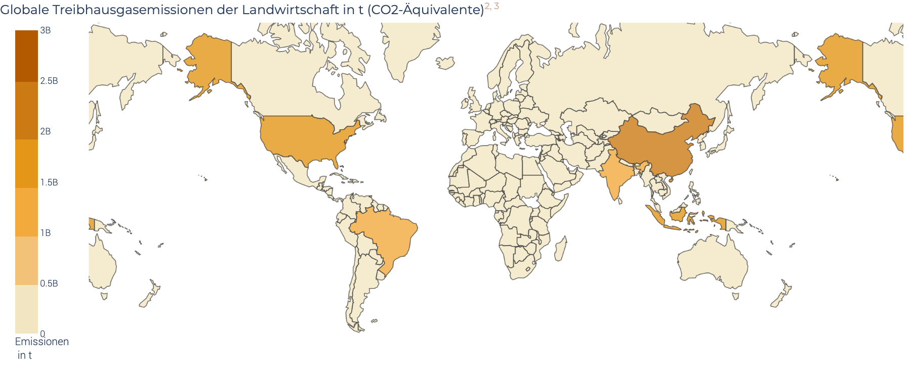
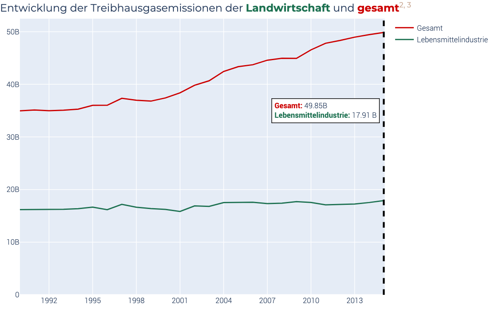

Design¶
Allgemein¶
Um ein einheitliches Erscheinungsbild zu erhalten, habe ich zu Beginn ein Farbschema und Schriftarten definiert. Das Farbschema sollte die Themen Landwirtschaft, Lebensmittel und Nachhaltigkeit widerspiegeln. Gleichzeitig sollte es sich auch am Design von Fridays for future orientieren, damit sich das Logo der Organisation besser integriert. Da die Farben hauptsächlich zur Auszeichnung in den Grafiken verwendet wurden, war es zudem wichtig, dass sie sich deutlich voneinander unterschieden. Deswegen entschied ich mich für bunte, aber dennoch gedeckte Farben, da diese natürlich und seriöser wirken. Die gewählten Schriftarten Montserrat und Roboto sind sowohl online als auch im Print gut lesbar und wirken modern.
Dashboard¶
Das Dashboard ist in drei Tabs untergliedert. Diese unterscheiden sich thematisch und folgen dem Aufbau der Storyline. Im 1. Reiter befinden sich die Grafiken zum Umwelteinfluss der gesamten Lebensmittelindustrie mit Fokus auf die Treibhausgasemissionen. Reiter 2 geht eine Ebene tiefer und zeigt den Umwelteinfluss einzelner Lebensmittel. Der Vergleich verschiedener Ernährungsweisen ist in Reiter 3 dargestellt.
Report¶
Der Report folgt ebenfalls dem Ablauf der Story und zeigt die Grafiken in derselben Reihenfolge wie das Dashboard. Zu jeder Grafik sind zusätzliche Informationen in Textform eingefügt. Passend zu den Inhalten in der Grafik sind bestimmte Passagen im Text farbig markiert.
Abbildungen¶
Abbildung 1.1: Umwelteinfluss der Lebensmittelindustrie¶
Die erste Grafik zeigt, welchen Anteil die Lebensmittelindustrie an negativen Umweltauswirkungen hat. Da die Lebensmittelindustrie im Vordergrund steht, ist deren Anteil farbig hervorgehoben. Durch das dunkle Grün der Lebensmittelindustrie entsteht ein deutlicher Kontrast zum Anteil restlicher Industrien und der Haushalte, die in beige gefärbt sind. Um die Wiedererkennung zu fördern, wird die Landwirtschaft auch in Abbildung 4 grün gefärbt. Die verschiedenen Umwelteinflüsse sind so geordnet, dass der Anteil der Lebensmittelindustrie steigt. Damit wird betont, wie hoch der Anteil der Lebensmittelindustrie an negativen Umweltfolgen ist. Zusätzlich sind für jede Folge auch die Prozentwerte als Text eingefügt, um die Lesbarkeit zu verbessern. Der Hovertext gibt im Dashboard nähere Informationen zu den einzelnen Umweltschäden. Im Report sind diese Informationen im Fließtext enthalten.

Abbildung 1.2: Treibhausgasemissionen entlang der Produktionskette¶
In der nächsten Grafik wird gezeigt, in welchem Produktionsschritt die Treibhausgasemissionen entstehen. Die Daten werden als Kreisdiagramm dargestellt, um zu betonen, dass der Großteil der Emissionen aus Landwirtschaft und Flächennutzung stammt. Die Detailschritte werden durch die farbige Markierung zu vier übergeordneten Produktionsschritten (Landwirtschaft, Flächennutzung, Lieferkette und Nach dem Verkauf) zusammengefasst. Der prozentuale Anteil ist zur besseren Lesbarkeit für jeden Bereich als Text eingefügt. Die farbigen Produktionsschritte werden im Dashboard als Hovertext angezeigt und im Report im Fließtext beschrieben.
{kind=link}
Abbildung 1.3: Verteilung der globalen Treibhausgasemissionen der Lebensmittelindustrie¶
Um die globale Verteilung der Treibhausgasemissionen aus der Lebensmittelproduktion zu zeigen, wurde eine Weltkarte zur Visualisierung gewählt. Jedes Land wird abhängig von der Höhe der Emissionen gefärbt. Je höher die Emissionen aus der Lebensmittelindustrie, desto dunkler. Dadurch stechen die fünf Länder mit den höchsten Emissionen direkt ins Auge. Durch den Zeitstrahl im Dashboard hat der Nutzer zudem die Möglichkeit die Weltkarte beliebig zu filtern. Die absolute und relative Anzahl der Emissionen wird im Hovertext angezeigt. Dadurch kann der Nutzer noch mehr Details aus der Grafik lesen. Die Indikatoren im Dashboard geben wiederum einen guten Überblick über die Entwicklung der Emissionen. Das Delta wurde bewusst mit angezeigt, um die Veränderung im Vergleich zum Vorjahr zu zeigen und besonders das Wachstum der gesamten Treibhausgasemissionen zu betonen. Im Report werden dagegen ausschließlich die aktuellsten Zahlen als statische Weltkarte dargestellt. Die Werte der Länder mit den höchsten Emissionen werden als Annotation in der GRafik angezeigt und im Text beschrieben.
{kind=link}
Abbildung 1.4: Entwicklung der globalen Treibhausgasemissionen¶
Es wurde ein Liniengraf gewählt, um die Entwicklung der Emissionen im Zeitverlauf darzustellen. Die Lebensmittelindustrie ist zur besseren Wiedererkennbarkeit wieder in grün gefärbt. Die Linienfarbe spiegelt sich auch im Titel der Grafik wieder. Der Hovertext beider Linien ist verbunden, um eine einfachere Vergleichbarkeit zu ermöglichen. Dafür werden die absoluten Werte der beiden Linien angezeigt. Die statischen Indikatoren im Dashboard betonen nochmal auf einen Blick, dass das Wachstum der gesamten Treibhausgasemissionen deutlich größer ist als das der Lebensmittelindustrie.
{kind=link}
Abbildung 2.1a: Umwelteinfluss einzelner Lebensmittel¶
Um verschiedene Umweltauswirkungen einzelner Lebensmittel zu visualisieren, wurde ein Streudiagramm gewählt. Zusätzlich zur x- und y-Achse, deren Position eine Aussage über die Höhe der Treibhausgasemissionen und des Flächenbedarfs beschreibt, gibt die Größe der Punkte Aufschluss darüber, wie groß der Süßwasserbedarf des Produkts ist. Alle Werte sind für 1000 kcal berechnet, um eine Vergleichbarkeit der Produkte sicherzustellen. Die Bezeichnung des Nahrungsmittels sowie die absoluten Werte der drei Umwelteinflüsse sind im Dashboard als Hovertext hinterlegt. Der Nutzer hat hier zudem selbst die Möglichkeit die angezeigten Lebensmittel aus einer Liste auszuwählen. Die Produkte sind farbig nach ihrer entsprechenden Kategorie markiert. Pflanzliche Produkte werden grün dargestellt, um eine positive Assoziation zu erzeugen. Tierische Produkte sind dagegen in den Signalfarben gelb und rot markiert, um einen Komplementär-Kontrast zu erzeugen. Die Legende gibt Aufschluss darüber, welcher Kategorie die Produkte angehören. Dadurch ist auf einen Blick ersichtlich, dass pflanzliche Produkte allgemein geringere Folgen für unsere Umwelt haben als tierische Produkte, ohne dass die genaue Bezeichnung des Lebensmittels als Text angezeigt wird. Dies würde sich negativ auf die Übersichtlichkeit der Grafik auswirken.
Da diese Interaktivität im Report leider nicht möglich ist, wurden die einzelnen Produkte hier durch Annotationen identifizierbar gemacht. Zur Vereinfachung und besseren Übersichtlichkeit sind hier jedoch keine absoluten Werte annotiert. Die Größe der Punkte und Position im Graph gibt dennoch einen guten Überblick über die Unterschiede zwischen pflanzlichen und tierischen Produkten.
{kind=link}
Abbildung 2.1b: Umwelteinfluss pflanzlicher/tierischer Lebensmittel (Report)¶
Um auch im statischen Report viele verschiedene Lebensmittel abbilden zu können, wurden zwei zusätzliche Grafiken erstellt, die pflanzliche und tierische Produkte darstellen. Durch die Farbcodierung sind diese wieder schnell erkennbar. Da die betrachteten pflanzlichen Produkte deutlich geringere Emissionen erzeugen und Fläche benötigen als die restlichen Produkte, wurde für diese eine geringere Skala der X- und Y-Achse gewählt. Dadurch wird auch ohne Zoom-Möglichkeit wie im Dashboard eine detailliertere Betrachtung ermöglicht.
{kind=link}
Abbildung 3.1: Vergleich verschiedener Ernährungsweisen¶
Die Grafik zeigt die Zusammensetzung der durchschnittlichen Ernährungsweisen verschiedener Länder und eine von Forschern empfohlene, nachhaltige Ernährung (EAT-Lancet). Durch das horizontale, gestapelte Diagramm, sieht man nicht nur die Zusammensetzung der Ernährung, sondern auch wie viel insgesamt konsumiert wird. Zur Orientierung ist die EAT-Lancet Diät immer unten angeordnet. Im Dashboard hat der Nutzer zusätzlich die Möglichkeit individuell Länder auszuwählen. Die Lebensmittelkategorien sind analog zu den vorherigen Grafiken farbig markiert, sodass sie wieder schnell erkannt werden. Die Kategorien sind nochmal in Unterkategorien unterteilt. Diese Information ist nur im Dashboard als Hovertext verfügbar. Zur besseren Vergleichbarkeit sind die Kategorien immer in der gleichen Reihenfolge angeordnet. Die absoluten Gramm-Zahlen werden nur bei ausreichender Größe in den Balken dargestellt. Die EAT-Lancet Diät wird bewusst immer unten eingeblendet, um eine stetige Vergleichbarkeit von Land und empfohlener Ernährungsweise sicher zu stellen.